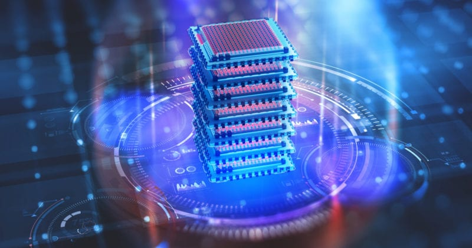

La computación cuántica es un paradigma de computación distinto al de la computación clásica. Se basa en el uso de qubits en lugar de bits, y da lugar a nuevas puertas lógicas que hacen posibles nuevos algoritmos. Una misma tarea puede tener diferente complejidad en computación clásica y en computación cuántica, lo que ha dado lugar a una gran expectación, ya que algunos problemas intratables pasan a ser tratables. Mientras un computador clásico equivale a una máquina de Turing, un computador cuántico equivale a una máquina de Turing cuántica.
